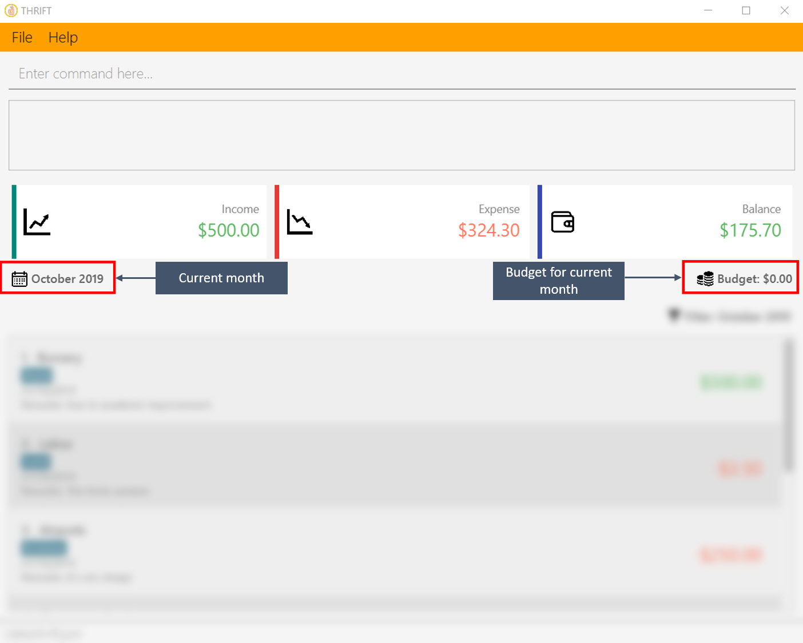
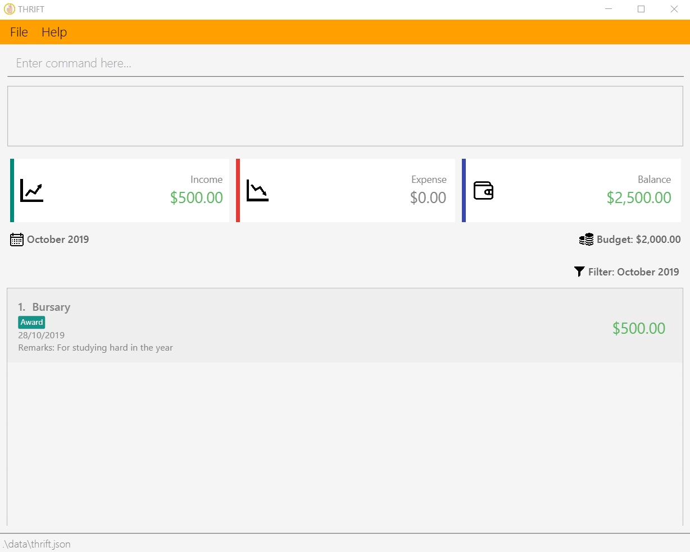

1. Introduction
1.1 Purpose
This portfolio serves as a showcase of my roles and contributions to the team project THRIFT. This project was part of
the requirements of a year two software engineering module that I have taken as an undergraduate in NUS.
1.2 Project: THRIFT
THRIFT is a finance tracker desktop application targeting money-conscious NUS students who wish to keep
their spending in check. It allows its users to set a budget for each month and track incoming and outgoing transactions. This would remind the user
not to overspend as they will constantly see their remaining balance for that month. The following image is what THRIFT looks like:

THRIFT which shows the user’s balance as well as transactions1.3 Background
THRIFT is morphed from the original AddressBook-Level3 application which allows users to add contacts,
creating a personalised list. My team and I have since transformed the application to better suit our purpose.
In this project, I was the team lead and was primarily in charge of spearing the direction of the THRIFT.
This meant that managing project milestones, deadlines and delegating work to different team members were part of my
responsibilities.
My team members took on the roles of "User Experience Developer", "Process Analyst", "Quality Assurance Manager" and "Software Architect".
We all had important and major roles to play in order to ensure that THRIFT is successful.
1.4 Legend
There are various text styles used in this portfolio and its usages are explained below.
| This symbol denotes information that you may want to take note of when using the application. |
| This symbol denotes a tip which you may find useful when using the application. |
As our User Guide and Developer Guide are formatted differently, you should refer to their respective formatting guide below:
| User Guide: |
Formatting of the User Guide |
| Developer Guide: |
Formatting of the Developer Guide |
2. Summary of Contributions
This section provides a summary on the contributions I made to THRIFT.
2.1 Enhancements made
Add transactions into the transaction list
The add_expense/add_income command allows the user to track their incoming and outgoing transactions.
-
Highlights: This command allows the user to optionally annotate each transaction with a
RemarkandTag.
Set budget for a specified month
The budget command allows the user to set their budget for a particular month. This allows them to see if they are within their spending limit for the month.
-
Highlights: The user can change the budget at any time and their remaining balance would update accordingly.
2.3 Other contributions
-
Project management:
-
There were a total of 5 releases, from version 1.0 to 1.4. I managed every release on GitHub.
-
-
Enhancement to existing features:
-
Refactored the original AddressBook-Level3 codebase to fit our requirements. (Pull request #62)
-
Updated the original delete command to require a prefix i/INDEX to specify which transaction the user wishes to delete. This makes the delete command syntax consistent with the update command. (Pull request #104)
-
Updated the original find command to search for the specified keyword(s) in a transaction’s
Remarkas well asDescription. (Pull request #163)
-
-
Documentation:
-
Updated the original developer guide to suit the context of
THRIFT. (Pull request #169)
-
-
Community:
3. Contributions to the User Guide
The following sections illustrate my ability in writing documentation targeting end-users which guides them in using the various features of the application.
Setting monthly budget: budget
You are able to set a budget for each month in THRIFT. This allows THRIFT to display your remaining balance for the month and lets you keep your spending in check.
| It is not compulsory to set a budget for each month and you can use THRIFT normally without setting budgets. |
Command syntax:
budget v/VALUE d/MONTH
Example usage:
You wish to set your budget for the month October 2019 as $2000:
-
Your current budget for the month October 2019 is $0.
 -
You type: budget v/2000 d/10/2019 in the command box and press Enter.
-
You should see in the result box that your budget for October 2019 has been set to $2000.
| If you are changing your budget for the current displayed month, you should see the changes on the GUI immediately. |
Deleting a transaction: delete
If you find that a transaction is no longer relevant to you, you may delete it from THRIFT.
Command syntax:
delete i/INDEX
Example usage:
Assume that you wish to delete a bursary income transaction from your transaction list because the bursary was mistakenly awarded to you.
-
This transaction is currently the first transaction in your transaction list.
 -
You type: delete i/1 and press Enter.

-
You should see that the bursary transaction has been deleted from THRIFT and your balance has been updated accordingly.

4. Contributions to the Developer Guide
The following sections illustrate my ability in writing documentation to provide developers insights on the design of the application. It also showcases the technical depth of my contributions to the project.
Adding transactions
We allow users to add Expense/Income transactions into THRIFT which enables record-keeping. This section will show how we handle such
requests from the user at the back-end.
Implementation
We store every single Transaction added by the user into an ObservableList<Transaction>, which is a list object in TransactionList. We used an ObservableList because whenever there are changes to the list, any other component
of THRIFT using it will automatically reflect its changes.
We implemented adding a Transaction through the following commands: add_expense/add_income. This process leverages on polymorphism: Expense and Income are both subclasses of the abstract class Transaction.
Each Transaction contains the following mandatory fields: Description, TransactionDate and Value; as well as optional fields: Remark,
and Set<Tag>. The following class diagram depicts this relation:

Because of this polymorphism relation, many of the driver functions in THRIFT simply references Transaction and it will work for both Expense
and Income transaction objects. For example, when inserting a new Expense/Income, the AddTransactionCommandParser will determine
which object to initialize. The sequence diagram below shows how adding a Transaction work in the back-end:
Transaction is processed with polymorphismExpense and Income are normally instantiated by either ExpenseCommandParser#parse(String args) or IncomeCommandParser#parse(String args), which
attempts to parse the various parameters supplied in args and return either a Expense or Income object. The following conditions will cause a ParseException
to be thrown by the parser:
-
Missing parameters
-
Incorrect syntax (i.e. missing prefix, if it is required)
-
Illegal values in parameters (i.e. special characters and symbols entered for a integer-only field)
-
Multiple occurrences of parameters which only expects a single entry
| If the user input is incorrect due to any of the reasons above, the usage syntax will be shown. |
We will demonstrate how a Transaction is added into THRIFT and how the back-end handles each step of the process:
Step 1. The user executes add_expense n/Laksa v/3.50 to insert an Expense with its Description set to "Laksa"
and its Value set to "3.50". The TransactionDate is set to the user’s current system date in the form "dd/mm/yyyy".
The input is now checked and an attempt to parse each parameter occurs:
-
Descriptionis parsed byAddTransactionCommandParser#parseTransactionDescription(ArgumentMultimap) -
Valueis parsed byAddTransactionCommandParser#parseTransactionValue(ArgumentMultimap) -
TransactionDateis instantiated byAddTransactionCommandParser#parseTransactionDate()
ArgumentMultimap is a class that stores all the parsed parameters taken from the user input.
|
Since the user input is valid, the Expense is successfully created and inserted into the transaction list.
The transaction list now contains 1 Transaction object.
Step 2. The user executes add_income n/Bursary v/500 r/Awarded for doing well in school to insert an Income.
The input is now checked in a similar fashion as in Step 2 except that:
-
Remarkis parsed byAddTransactionCommandParser#parseTransactionRemark(ArgumentMultimap)
Again, since the input is valid, the Income is successfully added into the transaction list. The transaction list
now contains 2 Transaction objects.
The following activity diagram summarizes what happens when the user executes a command to add a new Transaction:

Transaction into the transaction listDesign considerations
There are many different ways to implement how a transaction is added into THRIFT. In this section, we will be
justifying why we chose to implement it the way we did.
Aspect: Differentiating between Expense and Income
-
Alternative 1: (current choice): Introduce a
Transactionparent class which bothExpenseandIncomeextends from.-
Pros: Introduces polymorphism, easing references to either classes by simply referencing the
Transactionobject. For example, using a singleList<Transaction>instead of needing 2 separate listsList<Expense>andList<Income>. -
Cons: Reduces the readability of the program as polymorphism can be confusing.
-
-
Alternative 2: Keep
ExpenseandIncomeclasses separate, with each having their own specialized methods.-
Pros: Maintains an intuitive design:
Expensededucts money andIncomeincreases money. -
Cons: Incurs significant overhead and duplicated codes since it is likely that both
ExpenseandIncomewill have very similar methods.
-
Alternative 1 was chosen because we want to model it close to the real world: both Expense and Income are described
as being a Transaction.
Aspect: Managing how Value is stored and handled in Expense and Income
-
Alternative 1: (current choice): Disallow negative
ValueinExpenseobject, only using positive amount for bothExpenseandIncome-
Pros: Removes the need to implement support for inserting negative
Value. This is due to howValueconstraints are applied when restoringTHRIFTdata from the data file. -
Cons: Requires the developer to manually negate the
Valuewhenever calculations are done with aExpenseobject.
-
-
Alternative 2: Allow only negative amount in
Expenseobject and only positive amount inIncomeobject-
Pros: Calculating the balance becomes trivial - simply sum up the entire
List<Transaction>. -
Cons: Parsing the user input to allow only a single negative symbol and no other symbols causes an overhead.
-
Alternative 1 was chosen because we want to keep the transaction list clean - only positive integers are stored.